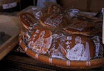
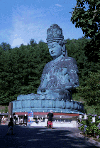
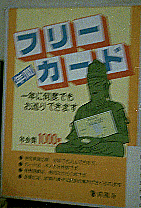
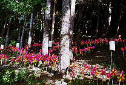
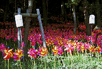
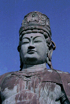
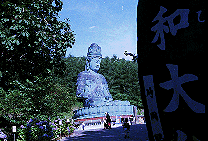
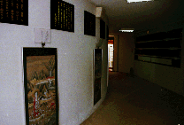
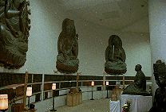
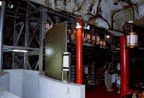

昭和大仏/青森県青森市
 
青森市街の東約10キロに昭和大仏と呼ばれるお寺がある。正式には青龍寺。
ここは「青森にだって大仏さんはいるんだぞお」と頑張っている寺である。
駐車場を過ぎ入口の手前の橋あたりから何やら怪しいオーラが漂い始めている。宗次郎の音楽が流れているのだ。
宗教関係の方はなぜか宗次郎がお好き。それにしても山の一軒家（寺か）のような所だから良いようなもののお隣さんがいたら速攻で苦情がはいりそうなこのボリューム、一日中流しているのか。
という訳で、以下に記すスポットのほとんど全ては常に宗次郎の曲がBGMとして流れていると思って頂きたい。
気を取り直して受付にて拝観料を払う。その時受付に貼ってあったポスターに目をやる。そこには「年間フリーカード〜1年に何度もお参りできます〜1000円」と書かれていたのである。ディズニーランドの年間パスポートを彷佛とさせるこのシステム、果たしてこのフリーカード、何枚位売れたのか気になるところである。

で、そのフリーカードを販売する位リピーターが多い（と思われれる）この寺、どんな所かといえば、ま、こんなところに載る位だから想像はつくと思うが、変な寺なのである。ちゃんと真面目な部分もあるので（お寺さんにしてみれば全部真面目だ、とツッコミが入りそう）、一言で片付けてしまうのも何なのだが
。
順路に沿って御案内してみよう。受付を過ぎると本堂、五重の塔など新しいながらも木造の正統的な建物が続く。この辺はいたって真面目である。真面目すぎて来た事を後悔するくらい真面目である。
しかしその先からは様子が変わってくる。まず目に飛び込んでくるのは地面がどピンクの林である。
 
といっても花ではない。ここはみちのく青森、そう、大量の風車なのである。この風車で埋め尽くされた林、はるか奥の方まで続いていて目眩がしてくる。尋常な数じゃあない。で、向かいには売店＆お休み処。大型モニターから流れる映像は恐らくここの住職なのだろう、テレビが取材かナンかできたのであろうその映像（ほとんど住職と思しき人物の独演だったのでこの寺のプロモーションビデオかも）が延々と流されている。お休み処といえども気は休めないのである。
 
で、そこを過ぎるとメインの昭和大仏。青銅製の座像仏はパンフによれば高さが約21メートル。胸や肩にちと汚れが目立つ、こんなところでも酸性雨の影響か。ちなみにパンフにはわざわざ奈良、鎌倉の大仏と越前大仏の高さまで記されてあった。勿論ここのが一番高いのね。
で、いざ台座部分へ。壁面にぐるりと仏像のレリーフが取り付けられた1階をまわってから階段を登って2階へ。そこは丁度大仏さんの蓮華座から足あたりの部分の内側なのだが、壁面は鋳造製だけに外側の立体ネガ状態、しかも補強用の鉄骨がガンガン組まれているので何か地下鉄の工事現場みたいな雰囲気。そこに位牌などが奉られており、ハイブリッドな空間になっている。これはこれで面白かった。
 

で、大仏さんから出ると次に待ち受けるのは童地蔵。お賽銭を入れて鐘を叩くと子供の声でお経が。うむー、大量の風車を見た後だけにディープな気分になってくるぞ。
その他、ボケ除け観音やお砂踏み霊場、弘法大師像など鋳造モノがずらりと並ぶこの寺、様々なエレメントを詰め込み過ぎて全体として方向性が90度ほどねじ曲がってしまったような感じがするところだった。
この寺を見終わってからも一日中頭の中で宗次郎の曲がリフレインしていたのは言うまでもない。
1997.8.
珍寺大道場 HOME